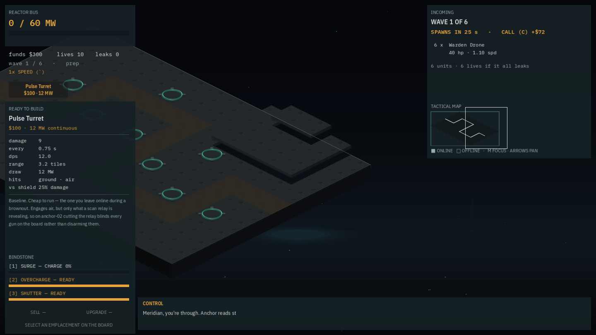

Elevation is a blit offset, measured against the real camera
TER-01. E4's data foundation already existed — the anchor schema carries terrain regions and “terrain parsers agree” is a green gate check. What did not exist was the spatial half: a z on every drawable, so a tile at elevation actually draws higher than one at ground level. The constants come from the measured camera, not the nominal tile — 32.0 px per level, derived from k = s·cos(30°) and checked against two throwaway Blender renders to within 0.004%. Proved two independent ways on anchor-01's authored plateau: the engine's own reported positions, and the rendered pixels of the screenshot itself.
E4's data foundation already existed before this change — the anchor schema carries terrain regions, and “terrain parsers agree” has been a green gate check comparing the Python and GDScript parsers against a fixture. What did not exist was the spatial half: nothing gave a tile at elevation a screen position any different from a tile at ground level. TER-06 picking, TER-09 the climbing lane and TER-10 bridges all need that to exist first.
The constants are derived from the measured camera, not the nominal tile
LEVEL_PX = 32.0 px per level and LEVEL_H = 0.401872 world units per level come from k = s·cos(ε): s = CELL/ortho_scale = 91.9463 px per world unit, ε = 30°, giving k = 79.6279 px of screen rise per world unit. Checked against two throwaway Blender renders: k/s = 0.865994 against cos 30° = 0.866025 — 0.004% off.
Deriving it from “128 px” would have been wrong, and this is decision 017's trap in a new place: the rendered tile is geometrically 130.03 px, and the 128 is an alpha-threshold artefact that calibrate() bakes in. The camera angle in this project's own instructions was wrong for six sessions because it was derived from memory rather than measured. Same shape of mistake, avoided this time.
The elegant part: most of the draw path needed no change at all
Height is baked into the tile cache's position, so combat_fx.gd and fx_additive.gd needed no change — they call view.to_screen(tile) with one argument and inherit elevation for free. _draw_contact_shadow needed none either. And _draw_range samples per point, so a range ring climbs a ridge rather than floating flat across it.
Iso.depth() gained an optional third z argument defaulting to 0.0, so every existing two-argument call site returns the same float byte-for-byte. It sits unused for now — reserved for TER-10, where tx+ty alone cannot break a tie between a bridge deck and whatever is underneath it.
Proved two independent ways
From the engine's own values, via a new --heights hook: tile (9,0) at z=1 sits 32.0 px above its same-diagonal ground neighbour — exactly LEVEL_PX. Tile (10,0) at z=2 sits 64.0 px above — exactly 2×LEVEL_PX.
And from the rendered PNG, independent of the hook's own arithmetic: the topmost silhouette row of tile (10,0) lands at image row 255; predicted from the reported position and the known diamond half-height, scaled to the 1440×810 capture, gives 255.1 — within one pixel. Against the un-elevated baseline a few tiles over at roughly 302, that is a 47–48 px rise, matching the predicted 2×32×0.75 = 48.

tools/shot.py capture, not a mockup: the same frame the --heights hook and the pixel measurement both describe.The hook's own prefix ate its own output, live
The --heights hook's marker prefix was added in the same change — which is the trap this project's own instructions already name for two other verification hooks, and which caught this one live: the first capture produced zero HEIGHT lines, because tools/shot.py filters relayed markers by prefix and had silently swallowed them. Worth a line on its own — a verification hook that runs, prints, and is quietly eaten has been a recurring shape this session.
The honest half
- The rules are untouched — no diff to sim/engine.py or scripts/anchor_sim.gd, range stays 2-D per TER-13, and Iso.height_offset() returns a Vector2 (float32), which the PRD bans from the rules, so it cannot leak into a grade even by accident.
- Parity is deliberately not cited as evidence. A 1440-run pass was observed during the work, but a concurrent agent was mid-refactor of the rules files at the time, so that result is not attributable to this change in either direction. It does not need to be — this change touches no file in the parity digest. Refusing to claim a green number that cannot be attributed is the more interesting fact than the number itself.
- TER-03 (writing level_px into the manifest) is deferred, with reasons rather than a shrug: it needs tools/check.py, which was out of scope, and verifying the manifest write means a real Blender invocation against the tracked assets/renders tree, which then forces mask_glow, pack_atlas and a Godot import to keep the shared atlas in sync. That is a shared-build-artifact change and not one to leave half-verified in a tree the owner plays out of.
- LF-183 filed: the editor overlay's path preview does not apply the height offset yet. Cosmetic, editor-only.
Commits
6de268cfeat(terrain): elevation is a blit offset, measured against the real camera